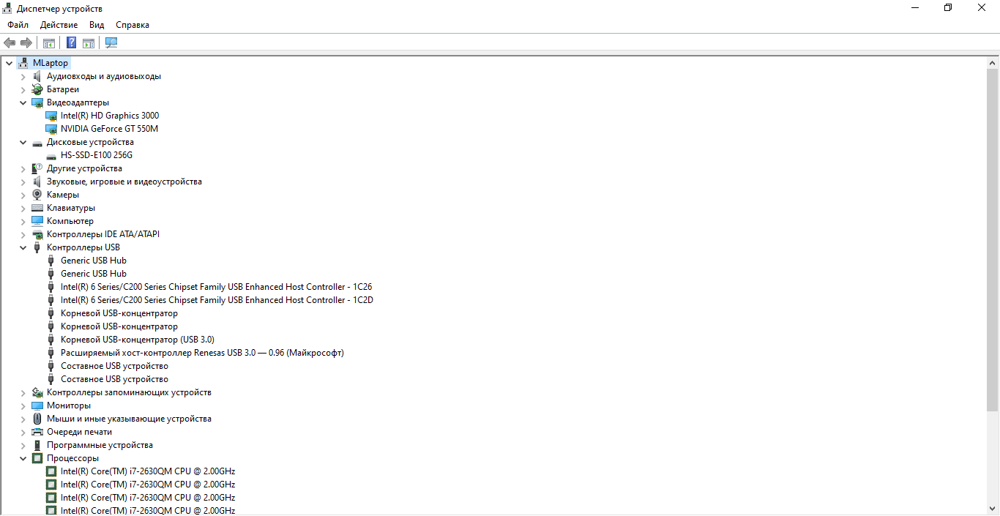
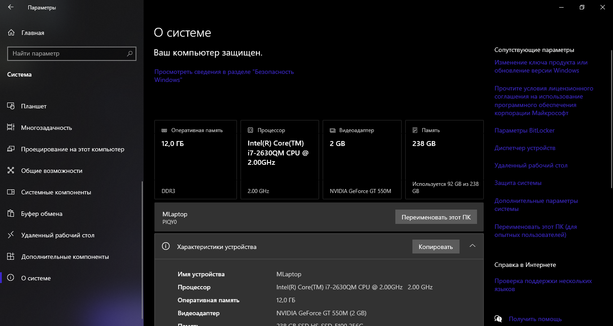

Установлен мощный Intel Core i7 2630QM на 2ГГц (Sandy Bridge). Отлично справляется с многозадачностью и рабочими программами. При одновременном использовании браузера, GIMP и AIDA 64 в окне, а также VPN клиента, ТГ и ДС в трее ЦП нагружен всего на 5-10 процентов. При запуске Spotify и калькулятора с вышеперечисленными программами ЦП нагружен на 6-11 процентов.
Дискретная графика NVIDIA GeForce GT 550M. (2ГБ VRAM). Позволяет без проблем запускать классические игры и работать с базовой графикой - например в GIMP или Krita, и видеопрограмме Capcut. Также установлена встроенная графика Intel HD Graphics 3000.

